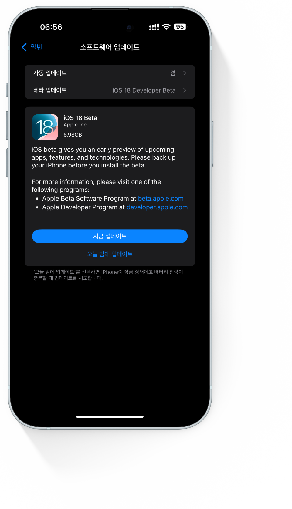

WWDC(World Wide Developer Conferenc)는 애플에서 매년 6월에 주최하는 세계 개발자
회의로 애플 디바이스에서 구동되는 새로운 소프트웨어를 공개한다. 가장 흔하게
알고 있는 아이폰의 소프트웨어 iOS, 아이패드를 구동하는 iPadOS, 맥의 macOS,
애플TV의 tvOS, 애플워치의 watchOS, 또 새롭게 공개된 비전프로를 구동하는 visionOS를 공개한다.
본인은 2016년 부터 쭉 시청해오고 있으며 특히 9월에 정식 출시될 소프트웨어들의 베타버전을 미리 다운로드받아 가장 먼저 체험해보고 있다.
WORLD WIDE DEVELOPER CONFERENCE, WWDC

EARLY ADOPTOR
얼리어답터
얼리어답터는 나에게 꽤나 큰 의미를 지니고 있습니다.
관심있는 분야에서는 누구보다 빠르게 새로운 것을 경험해보고 싶은 의지를 가지고 있으며 그것이 나에게는 IT, 테크 분야입니다.
본인은 이미 수년 전부터 애플의 베타 소프트웨어 프로그램에 등록하여 출시 전 기능을 먼저 사용해보고 있습니다. 베타 소프트웨어 특성상 예기치 않은 오류나 문제를 일으킬 가능성이 높지만 그것 또한 감수하는 것이 얼리어답터라 생각합니다.
본인은 이미 수년 전부터 애플의 베타 소프트웨어 프로그램에 등록하여 출시 전 기능을 먼저 사용해보고 있습니다. 베타 소프트웨어 특성상 예기치 않은 오류나 문제를 일으킬 가능성이 높지만 그것 또한 감수하는 것이 얼리어답터라 생각합니다.